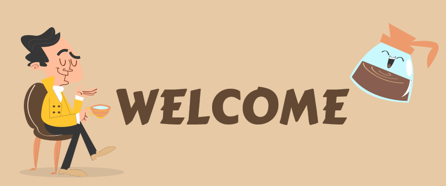

Atanapi Coffee Camp merupakan salah satu objek wisata kuliner di Bandung yang baru viral diberbagai media sosial. Tempat ini memang tergolong masih sangat baru, karena baru mulai beroperasi pada tanggal 1 Juni 2021 kemarin. Tempat ini merupakan spot nongkrong yang mengusung tema camping dengan menyuguhkan pesona alam sekitar yang menawan. Tempatnya cukup luas, nyaman dan fasilitasnya juga sudah memadai. Tak heran jika kedepannya, atanapi coffee camp menjadi tempat nongkrong favorit di Bandung.
Kopi Nako adalah jenis tempat ngopi yang begitu nyaman dan layak dijadikan tempat persinggahan saat kamu penat dengan hal-hal yang mampir di kepala. Kedainya nyaman, kopinya enak, mudah ditemukan dan harganya juga nyaman di kantong. Cocok nih untuk kamu yang sedang mencari cafe untuk mengerjakan tugas-tugas kuliah. Kopi Nako adalah tempat nongkrong yang cocok untuk kamu yang ingin berlama-lama hangout dengan teman-teman. Memasuki kopi Nak, kamu akan merasa sedang bersantap di sebuah taman yang asri dengan konsep bangunan semi glass house. Kopi Nako dihiasi oleh aneka pepohon cantik berwarna-warni di area outdoor.
Berdiri sejak Januari 2019, Kopikitaku hingga hari ini, menjadi bahan pembicaraan dan tujuan nongkrong anak-anak muda Kota Bandung. Ditempat ini Teman Traveler akan menemui kudapan-kudapan yang Bandung pisan, seperti beragam jenis gorengan: gehu, bala-bala dan cireng. Kopikitaku berada di area berdekatan dengan universitas-universitas terkemuka di Bandung. Para mahasiswa, kerap memanfaatkan ruang kafe ini untuk mendapatkan kenyamanan belajar atau sekadar kumpul bersama teman-teman.
Bangunan putih minimalis menempati lahan kosong pada kawasan Dipatiukur, Bandung. Belakangan, tempat kedai kopi itu sedang jadi buah bibir kalangan anak muda karena konsep tempatnya yang unik dan instagramable. Kedai kopi ‘Deu Coffee’ menambah jajaran kedai kopi hits Kota Bandung.Warna putih mendominasi dinding kedai. Kursi dan meja juga tidak menempel permanen, pihak manajemen menempatkan terpisah agar pengunjung bisa bebas menentukan spot duduk yang nyaman.
Memandang yang hijau-hijau di tengah padatnya kota adalah salah satu cara untuk mengistirahatkan badan maupun pikiran setelah penat bekerja atau belajar seharian. Secara psikologis, warna hijau memberikan pengaruh yang baik bagi perasaan dan pikiran menjadi lebih segar sekaligus tenang. Jardin Cafe dapat menjadi salah satu pilihan tepat bagi warga Bandung untuk merefleksikan pikiran dengan mengobrol santai bareng sahabat, pacar, rekan kerja atau sekadar me time untuk menenangkan diri. Suasana hijau nan asri dengan sentuhan warna putih dan coklat yang tenang akan menyambut kala menginjakkan kaki di Jardin Cafe pertama kali. Poin tambahan jika datang ke Jardin Cafe di malam hari, kamu akan ditemani cahaya-cahaya dari lampu gantung yang menambah kesan nyaman.Jardin Cafe terhitung sebagai cafe yang cukup terkenal di Bandung, salah satunya karena tempatnya yang menarik dan cocok untuk dijadikan tempat nongkrong maupun penambah postingan aesthetic di feeds Instagram.